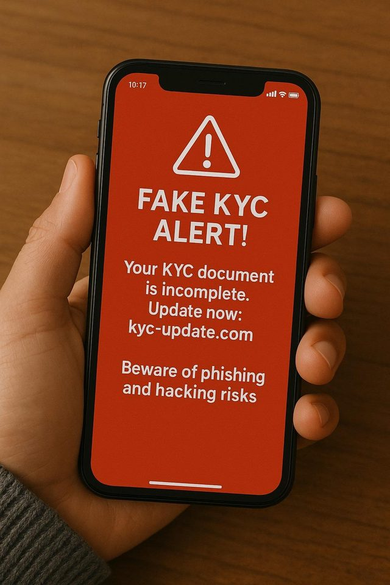

"Your KYC is incomplete. Verify your identity within 2 hours or your account will be blocked." The message has a link, a deadline, and a bank-like tone. It asks for something that sounds routine: proof of who you are. That is why the fake digital identity verification link scam catches so many careful people. It does not ask for money at first. It asks for you.
What is the fake identity verification link scam?
Identity checks are normal. Banks, wallets, telecom companies, and government services do verify who you are. Scammers copy that routine and send the check themselves, in a message you did not ask for. The "verification" is the bait. The real goal is to capture what you type, upload, or install.
Common versions
| Version | The story | What they collect |
|---|---|---|
| Bank or wallet KYC update | "Account will be blocked unless KYC is updated" | Login details, OTP, card details, documents |
| Aadhaar, PAN or DigiLocker "verification" | "Link your documents" or "confirm your ID" | Document photos and numbers, OTPs |
| SIM, electricity or gas "verification" | "Connection will be disconnected tonight" | ID details, then payment or app install |
| Selfie or video "verification" | Job, loan, or account approval needing a face check | Your face images and ID, for misuse later |
| "Verification app" download | "Install this app to complete KYC" | Access to messages, OTPs, and your screen |
How the scam works, step by step
- The alert. An SMS, WhatsApp message, email, or call says your account, SIM, or connection has a problem with verification.
- The pressure. There is a short deadline and a threat: blocked, frozen, closed, or cut off.
- The link. It opens a page that copies a real logo and layout. It may ask you to log in, upload ID, enter an OTP, or install an app.
- The capture. Whatever you enter goes to the scammer, who may use it right away to log in, move money, or open accounts in your name.
Some versions start with a link and then ask you to call a number, where a "bank officer" takes over. Others start with a call and then send the link.
What banks and regulators say
The State Bank of India has said it never asks customers to update KYC through links in messages, and the Reserve Bank of India has issued a public caution about KYC frauds. Its advice is to contact your bank directly through official channels if you get a KYC update request, to avoid clicking suspicious links, and to tell the bank quickly if you suspect fraud. Fake messages often threaten account blocking to create urgency. Real KYC processes are handled through the bank's branch, app, or official website, and they do not need your OTP, PIN, or password.
Warning signs of a fake verification link
- You did not start it. No one asked you to verify anything, and a link just arrived.
- A short, scary deadline: "within 2 hours," "today," "last warning."
- It threatens to block or close your account, SIM, UPI, or connection.
- The address is not the organisation's own. Words like kyc, verify, update, or secure are stuck onto a made-up name.
- It asks for an OTP, PIN, password, or CVV alongside documents.
- It asks you to install an app or share your screen to "complete" verification.
- It comes from a personal number, a free email address, or a shortened link.
- The message has odd wording, spelling mistakes, or an unusual sender.
Realistic examples
These are composite examples written to show the pattern. They are not reports about real people.
How to check a suspicious URL
You can spot many fake links in under a minute without clicking. Use these steps on any link you were sent.
- Do not tap it. Press and hold the link, or open the message details, to read the full address without opening it.
- Find the domain. It is the part right after
https://and before the first single/. Inhttps://hdfcbank.com.verify-kyc.in/login, the real site isverify-kyc.in, not the bank. - Read the end of the domain first. The last two or three parts decide who owns the page. Anything in front of them can be made up.
- Compare it with the official address. Take the real address from the bank's app, card, passbook, or an earlier trusted source, and compare letter by letter.
- Watch for tricks: extra words ("kyc-update"), hyphens, swapped or doubled letters, a different ending (.co instead of .com), or a long chain of subdomains.
- Do not trust the padlock. https only means the connection is encrypted. Scam pages can have it too.
- Be wary of shortened links such as bit.ly or tinyurl, which hide the destination.
- When unsure, type the official address yourself or open the app, and check from there.
Try the link red-flag scanner
Paste a link you received. This tool reads the address only. It does not open it, and nothing you paste leaves your browser.
How to protect your documents, OTPs, passwords and banking information
Documents (Aadhaar, PAN, ID photos, selfies)
- Upload documents only inside an official app or website you opened yourself.
- Where an option exists, share a masked Aadhaar, which hides most of the number, instead of the full one.
- When giving a photocopy to a third party, it is commonly advised to write the purpose and date across it, so it is harder to reuse.
- Do not send ID photos or selfies to people who contacted you first.
OTPs
- An OTP is for you alone. No bank, government office, or delivery company needs it read out or typed into a page you reached from a message.
- Read the full OTP message. It usually says what the code is for and who is asking.
Passwords
- Never type a password on a page you reached through a message link.
- Use a different password for each important account, and turn on two-step verification where offered.
Banking information
- Keep card details, CVV, net banking login, and UPI PIN private. No genuine verification needs them.
- Turn on transaction alerts and set limits you are comfortable with.
- Do not install apps or share your screen at someone else's request.
- Save your bank's official app and number so you do not have to search during a panic.
What to do if you have been scammed (India)
Act quickly and keep notes as you go. The right steps depend on what you shared.
If you only opened the link
- Close the page. Do not enter anything more.
- Clear the browser history, and run a security scan if you downloaded a file or app. Uninstall any app you did not mean to install.
- Change passwords for your email and banking from a safe device.
If you entered passwords, OTPs, or card details
- Call your bank immediately using the number on your card or the official website. Ask them to block the card, net banking, and UPI.
- If money has left your account, call the National Cyber Crime Helpline 1930 and file a complaint at cybercrime.gov.in. Choose the financial fraud category and keep the acknowledgement number.
- Raise a dispute in your UPI app for any UPI transaction. See the NPCI UPI dispute redressal page.
If you shared Aadhaar, PAN, or ID photos
- Tell your bank and any other service you use, and watch for unusual activity.
- Check your credit report with a credit bureau for loans or cards you did not apply for.
- Check which mobile connections are registered in your name using the Sanchar Saathi portal, and report any you do not recognise.
- If someone has misused your identity, file a complaint on cybercrime.gov.in.
Report the message itself
You can report the fraudulent call, SMS, or WhatsApp message on Chakshu, which is part of the Department of Telecommunications' Sanchar Saathi portal. Reports are meant for communication received within the last 30 days, and a screenshot is optional. Chakshu does not handle financial fraud or cybercrime cases, so if you lost money, use 1930 and cybercrime.gov.in first.
If the bank or app does not resolve it
Write to the bank's grievance officer, and escalate to the RBI Ombudsman through the RBI complaint portal.
Nobody can promise that money will be recovered. Quick reporting gives the best chance that a transfer can be stopped or traced. Check the official sites above for current procedures, because they can change.
Conclusion
The fake digital identity verification link scam works because it sounds like routine paperwork with a deadline. The defence is also routine. Do not use links you did not ask for, read the domain before you trust a page, and keep your OTPs, passwords, and documents to yourself. When a message says your identity needs verifying, go to the real app or call the real number.
Related scams use the same pressure. Read our guides on the fake QR code verification scam, the fake UPI refund confirmation scam, the fake AI customer support chat scam, and fake PAN card update messages.
Got a message or link you are unsure about? Paste the message into our free checker for a quick first read.
Frequently asked questions
What is a fake digital identity verification link scam?
It is a scam where a message, email, or call sends you a link to "verify your identity," update KYC, or confirm documents. The link leads to a fake page or app that steals your documents, OTPs, passwords, or banking details.
Do banks send links to update KYC?
Banks do not ask you to update KYC through links in unsolicited messages. The RBI has advised people to contact their bank directly through official channels if they get a KYC update request, and to avoid clicking unverified links.
How can I check if a link is safe?
Read the domain, which is the part right after https:// and before the first single slash. Compare it with the organisation's official address from its app, card, or website. Do not rely on the padlock icon, and do not open links you did not expect. When unsure, type the official address yourself.
What should I do if I shared my Aadhaar, PAN, or OTP on a fake link?
Call your bank at once, block cards and net banking if you shared banking details, and call 1930 or file a complaint at cybercrime.gov.in if money is lost. Also check your credit report and your mobile connections for anything you did not apply for.
Where can I report a fake verification message in India?
Report the message itself on the Chakshu facility on the Sanchar Saathi portal (sancharsaathi.gov.in), ideally within 30 days. If you lost money or are a cybercrime victim, call 1930 or file at cybercrime.gov.in, because Chakshu does not handle financial fraud cases.
Got a verification link or message you want checked?
Run it through the checker